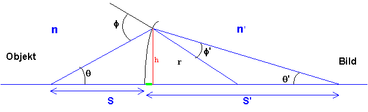
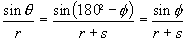
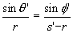
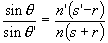
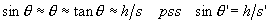
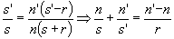

Härledning av linsmakarformeln
För att härleda linsmakarformeln krävs att vi gör approximationen att vinklar är så små att sin och tan för vinkeln kan ersättas med vinkeln själv.
Geometrin ser ut som i fig
Ur sinussatsen för trianglar
(sinus för vinkel genom motstående sidas längd är lika för alla vinklar i en triangel)
får vi och 
Vi dividerar dessa ekvationer med varandra (höger led för sig och vänster led för sig) och använder brytningslagen på
f och f ''
Men om vi nu har små vinklar gäller

Ska man ljuga är det lika bra att ta i ordentligt
!Vilket insättes i ovanstående, varvid fås
 Pilen innebär en stunds arbete (hehe!)